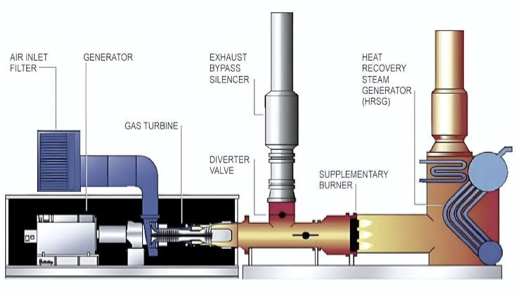
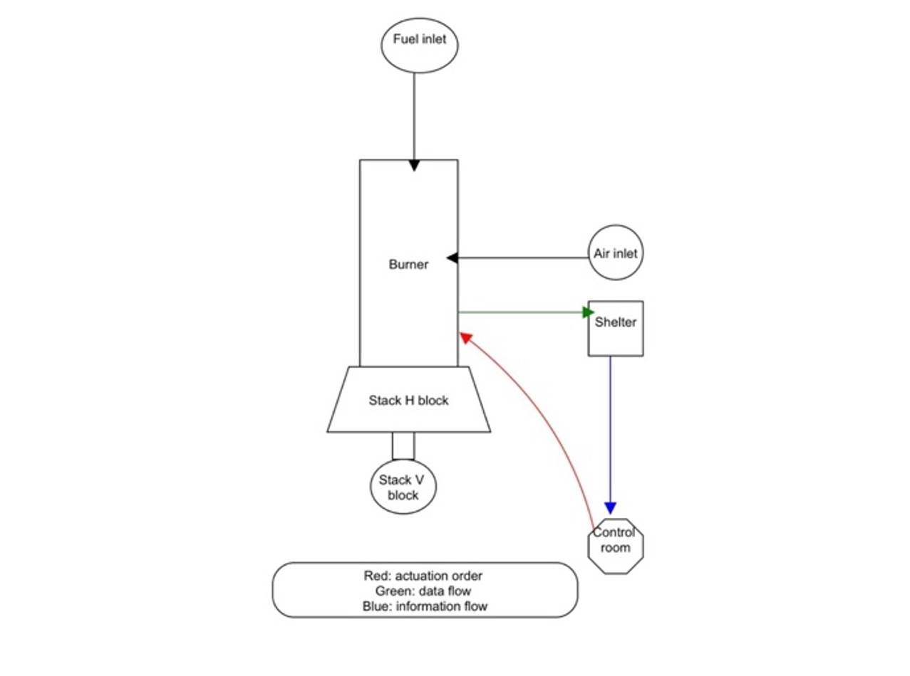
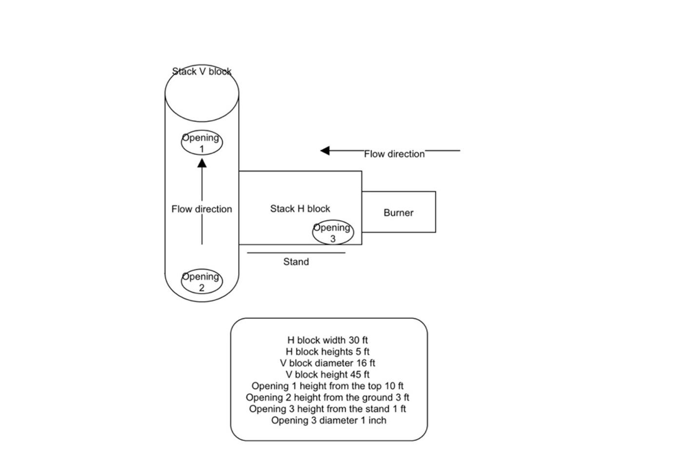
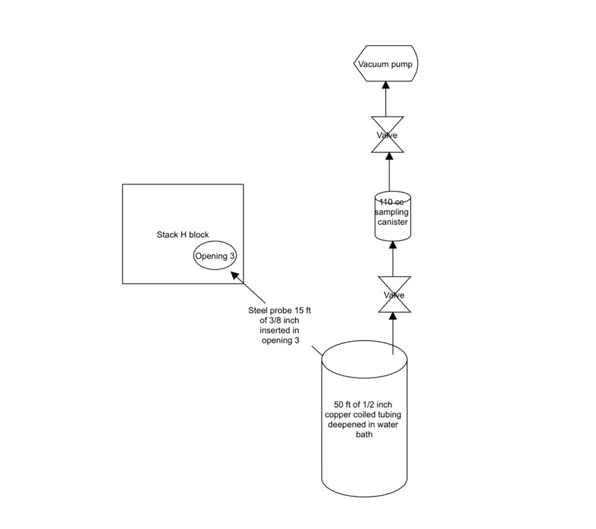
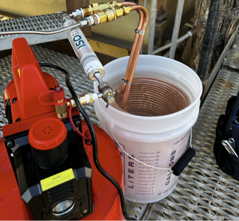
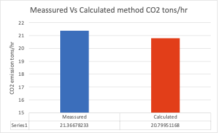

Point-source measurement methods for steam generators and cogeneration facilities.
This project focused on developing CO₂ measurement methods for once-through steam generators and cogeneration plants. A novel point-source sampling system and methodology were developed to minimize the influence of wind on the measurements. Results obtained with this method closely matched the analytical estimates used to calculate CO₂ emissions from steam generators.

The sampling point was placed within the stack system downstream of combustion. The protected location and controlled sampling path reduced the influence of ambient wind and helped produce a representative flue-gas sample.


Hot flue gas was routed through a metal cooling coil submerged in a water bath before collection. Lowering the sample temperature protected the tubing and downstream equipment while preparing the gas for analysis.


The collected samples were analyzed by gas chromatography. The resulting CO₂ emission rate was then compared with the value calculated using the analytical method. The close agreement between the measured and calculated results supported the performance of the sampling methodology.

| Sources | Once-through steam generators and cogeneration plants |
|---|---|
| Pollutant | Carbon dioxide |
| Sampling | Protected point-source flue-gas collection |
| Analysis | Gas chromatography and analytical comparison |
| Status | Method development and validation |